88 free calculators and simulators covering impedance matching, transmission lines, filters, antennas, amplifiers, waveguides, and MRI coils — plus 64 wiki articles. No install. Runs in your browser.
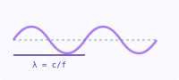
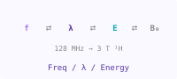
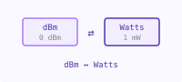
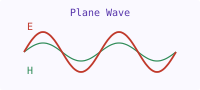
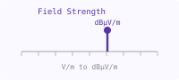
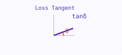
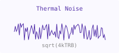
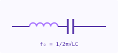
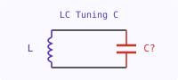
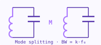
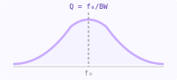
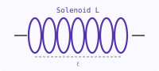
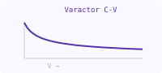
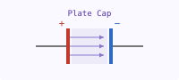
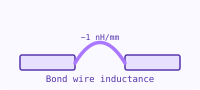
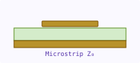
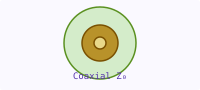
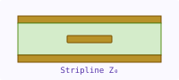
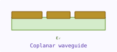
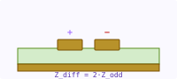
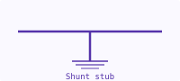
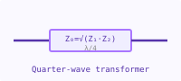
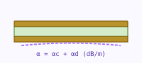
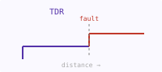
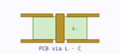
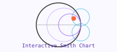
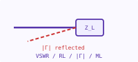
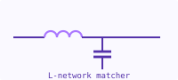
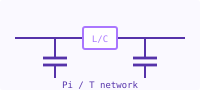
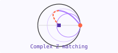
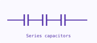
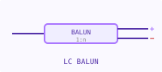
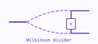
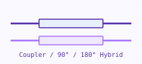
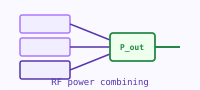
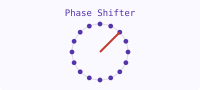
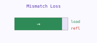
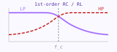
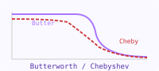
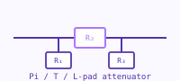
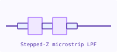
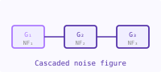
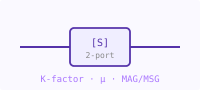
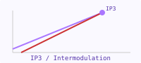
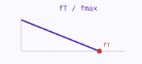
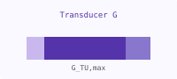
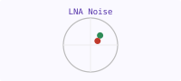
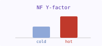
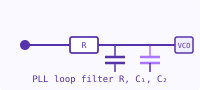
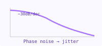